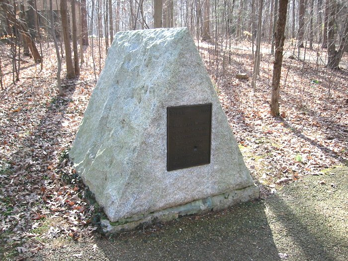

|
James Morehead was born in Virginia in 1750 and moved to North Carolina in the late 1770's. In 1779 he was commissioned a lieutenant in the Tenth North Carolina Regiment. Lieutenant Morehead fought in several battles, eventually rising to the rank of captain. The inscription on the monument reads: 1779 1900 |
All photographs ©2002-2006
by
Westfield, NC
Last Updated:
Sunday, January 14, 2007 10:46:06 PM -0500